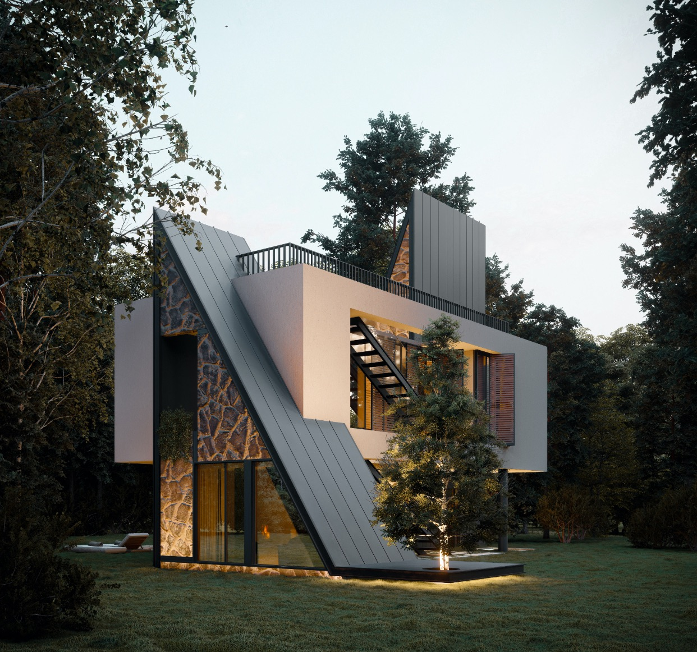
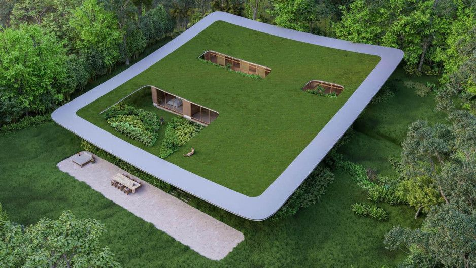
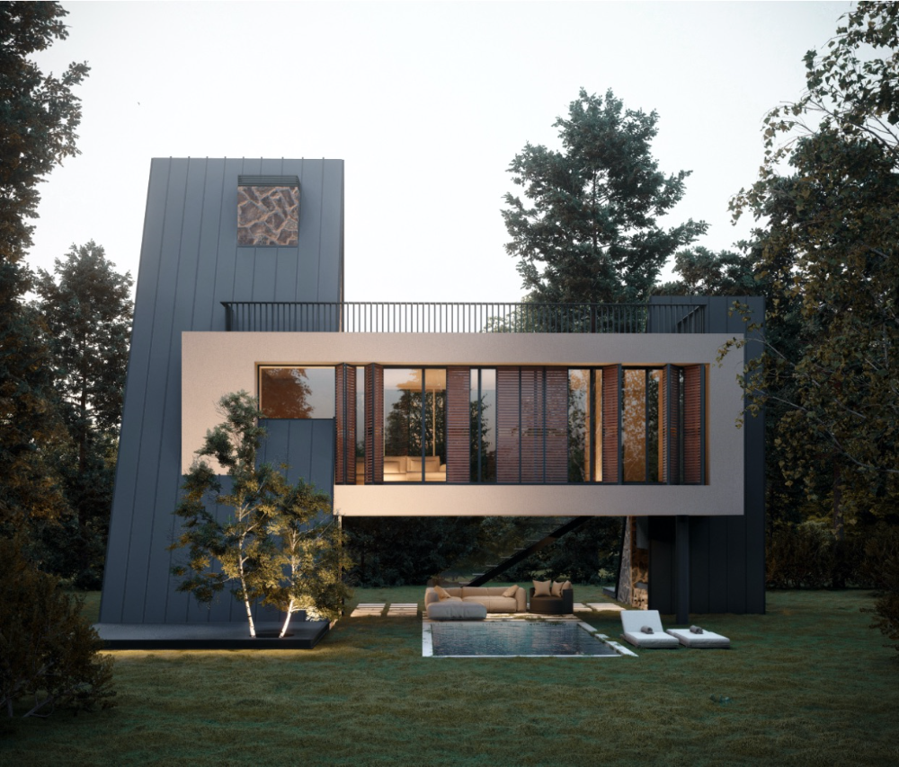

ARARAT architechture

projects:
  About:
Text description provided by the architects. Araam Villa is tranquilized in Qare khach village context on southern heights of Maku – a city in northwestern Iran near the Turkish border that has long been familiar with modern values due to its border proximity and the presence of migrant minorities. Moreover, the climate of this region is different from the plateau of Iran, it is full of water and has green pastures.
What is Ararat known for?
A new train track in Ararat will make it a dual gauge double diamond railway junction, allowing trains compatible with both gauge types to travel through. This new link is scheduled to be operational by February.